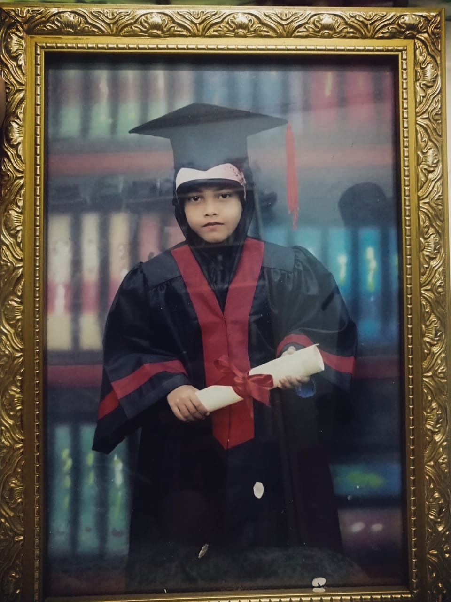
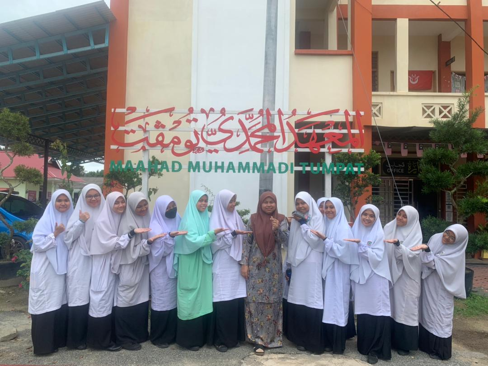
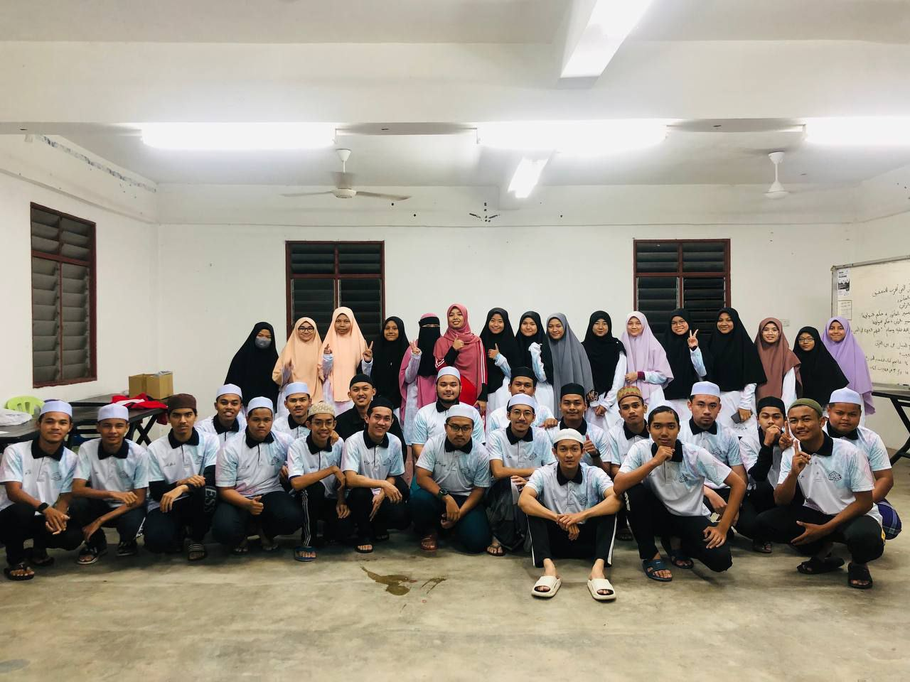
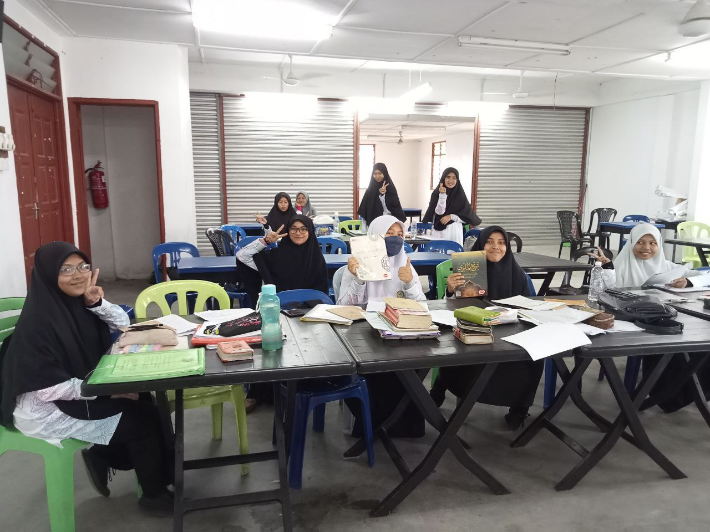
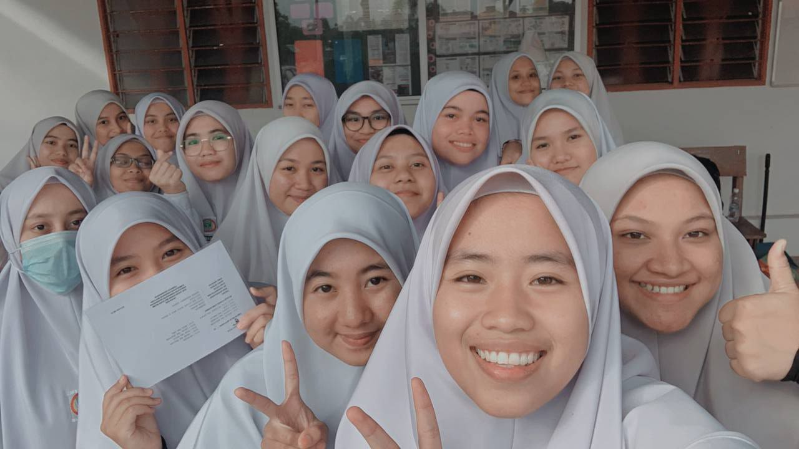
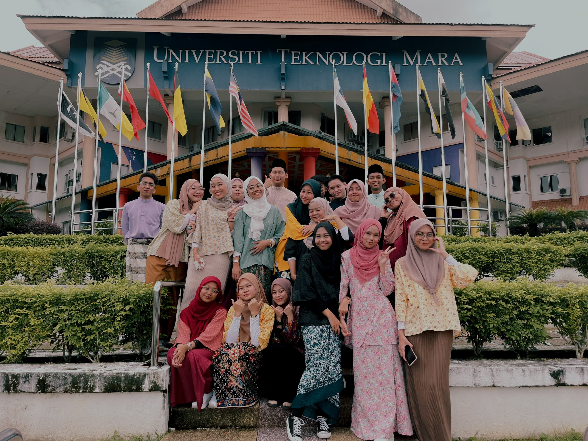
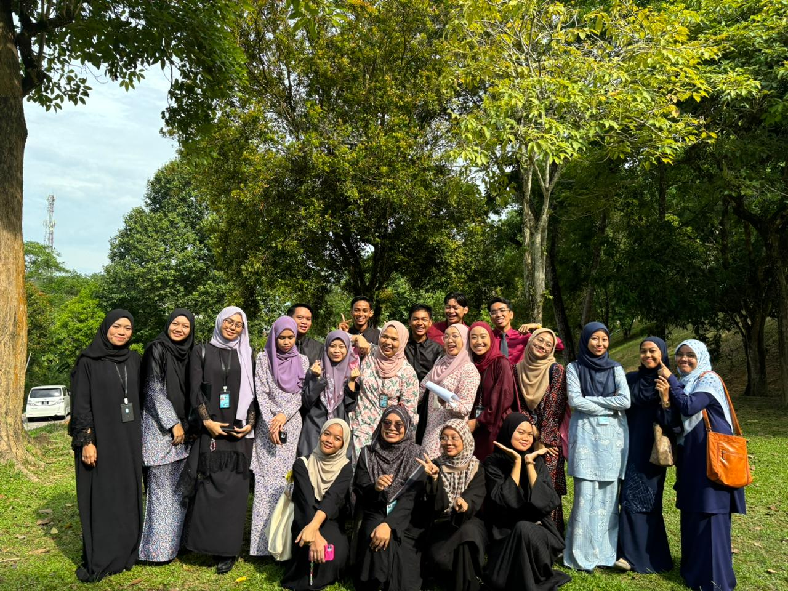

Education
My first kindergarten is PASTI when I 5 years old which are in 2009 and I moved to TABIKA KEMAS after a year at PASTI . After that, I start my primaly school in 2011 at SK Geting. Not too far from my house. So, sometimes I just go to school with bicycle,if my father give a permission for that. As you can see, I'm just ordinary student, and I don't have much memories at primaly school.
Secondary School📚
Alhamdulillah, in 2017, I continue my studies at Maahad Muhammadi Tumpat, where is my brothers and sisters also study there. Everything start here. About my weakness, my abilities, about friends, teachers, people and more! I meet a lot of good people and they also teach me without hestitate. That was my secondary school and I called it second home. That was because when I was form 6, and when the exam just come nearly, my friends and I stay at school start 7 a.m. until 6 pm. Even at weekend, I still go to school to study. None stop until the day of examination come. Alhamdulillah, I got level JAYYID in STAM (Sijil Tinggi Menengah Agama).
   University🎓
I came to eras university at 2023, and now I'm student second semester Bachelor's Degree Information Management, at UiTM Machang Branch Kelantan.
Relevant Courses: Information Technology, Computer, and Management.
This is my classmates💕
 